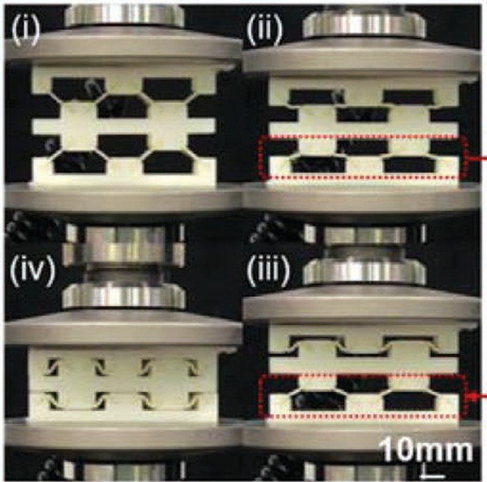
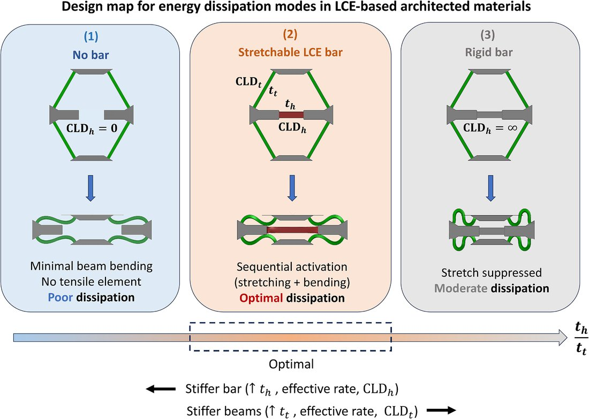
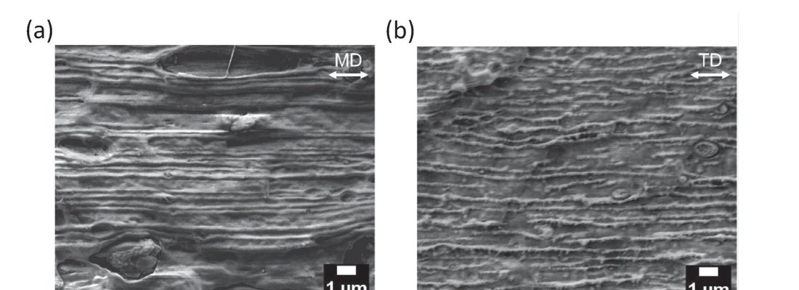

Research
Polymeric materials and structures are everywhere in engineering, from protective equipment and aircraft to medical devices and soft robots. Their response is large, nonlinear, and dissipative; it changes with rate, temperature, and load history, and it is set by the microstructure that composition and processing determine and by the structure it is built into. Yet constitutive modeling still works one model for one material, architected structures are designed as if their material were linear elastic, and recycled plastics are qualified by trial. My vision is a predictive digital twin of polymeric materials and structures: laws discovered for whole families of polymers, structures whose material and geometry are designed together, and manufacturing that delivers the microstructure a design requires. The three pillars below work as one loop: what is made is tested, and the new measurements improve the law and the next design.
Constitutive discovery for polymer families
Constitutive laws today are hand-crafted: an expert chooses a functional form and refines it for months, for one material, while new polymers now appear faster than their laws. Data-driven models learn quickly but leave their mechanisms implicit. I aim to discover closed-form, physics-based laws from data: machine learning chooses among physical mechanisms such as network stretch, reptation, and glassy yield, finds their functional forms, and selects the most informative next experiment. A single law then covers a whole family whose members differ in composition or crosslink density, and an open library of laws classified by physics lets a new polymer be simulated from a few tests.
Where it starts. For digitally mixed polymers, printed from a rubbery and a glassy resin, I established a time–temperature–composition equivalence that collapses the viscoelastic response of the whole family onto one master curve, and built a single finite-strain constitutive framework that predicts a composition withheld from calibration: one law for an entire material family, built by hand, which this pillar will discover from data.


Relevant Publications
- Time–temperature–composition equivalence of the viscoelastic behavior through the glass transition of digitally mixed 3D-printed polymers, B. Shen, S. K. Kumar, M. C. Boyce, arXiv:2610.14986 (2026)
- Composition-dependent nonlinear viscoelastic–viscoplastic behavior and constitutive framework for digitally mixed polymers spanning the glass transition, B. Shen, M. C. Boyce, arXiv:2609.04399 (2026)
- Data-driven discovery of composition-dependent constitutive models for hyperelasticity and viscoelasticity of digital materials, J. García-Ávila, B. Shen, et al., arXiv:2609.04541 (2026)
- Thermoviscoelasticity of polydomain liquid crystal elastomers regulated by soft elasticity, Z. Wei, B. Shen, et al., arXiv:2605.11455 (2026)
- Finite element modeling of viscoelastic liquid crystal elastomers, A. E. H. Chehade, B. Shen, et al., International Journal for Numerical Methods in Engineering (2024)
Material–structure co-design for programmable response
Architected materials are usually designed through geometry alone, with the material idealized as linear elastic; the nonlinearity, rate dependence, relaxation, and yield of real polymers are left out. I design material and geometric nonlinearity together. Geometry converts a material’s relaxation times into a structure’s own time scales, so that buckling, snapping, and unfolding can be ordered in time without a stimulus, sensor, or actuator, and composition printed voxel by voxel becomes a design variable. The goal is time as a design dimension, from helmets and armor that absorb impact to space structures that deploy in a designed order.
Where it starts. In architected liquid crystal elastomers I showed that viscoelasticity changes when and how layers buckle, so energy absorption rises with loading rate; adding a stretchable bar that competes with beam buckling, I found the geometry at which bending and stretching members activate in sequence and the lattice absorbs up to 2.5 times the energy of a rigid-bar design.


Relevant Publications
- Combining stretching-dominated and bending-dominated dissipation behavior to optimize energy absorption in liquid crystal elastomer-based lattice structures, B. Shen, et al., Journal of the Mechanics and Physics of Solids (2026)
- Synergistic energy absorption mechanisms of architected liquid crystal elastomers, S.-Y. Jeon, B. Shen, et al., Advanced Materials (2022)
- Computational analysis of buckling-based stiffness programming of liquid crystal elastomer beams, N. Hertlein, B. Shen, et al., ASME IDETC (2023)
- Programming the time into 3D printing: current advances and future directions in 4D printing, B. Shen, et al., Multifunctional Materials (2020)
- Designing self-oscillating matter, B. Shen, S. H. Kang, Matter (2021)
Predictive manufacturing of recycled and aged polymers
Recycled plastics are seldom trusted with load: every batch differs in its contaminants and in how it was processed, so the largest-volume plastics are downcycled. I aim to predict the stiffness, strength, and ductility of recycled and aged polymers from a few measurements of their microstructure, so that a batch is qualified by calorimetry, microscopy, and rheometry rather than a test campaign, and to invert that law into the processing a target performance requires: contamination processed into a benign morphology rather than sorted out or downcycled.
Where it starts. In films extruded from post-consumer polypropylene, I showed that polyethylene drawn into striations, not crystalline orientation, governs anisotropic failure, and that splitting and restacking the melt restored the performance of virgin material with the same polyethylene content: morphology, not purity, decides.

Relevant Publications
- The anisotropic structure and mechanical behavior of films extruded from recycled polypropylene, B. Shen, et al., Polymer Engineering & Science (2026)
- Characterization, processing, and modeling of industrial recycled polyolefins, D. O. Kazmer, S. O. Nzeh, B. Shen, et al., Polymer Engineering & Science (2024)